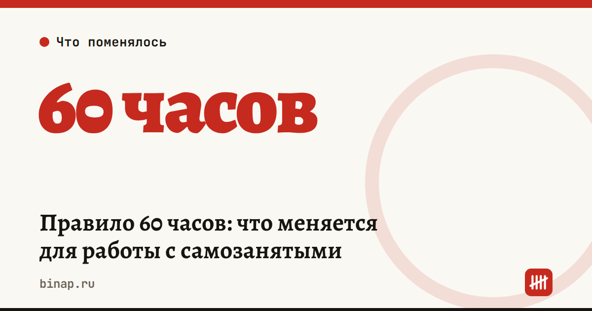

Правило 60 часов: что меняется для работы с самозанятыми

Темы:Самозанятые
С 1 октября 2026 года вместе с законом о платформенной экономике начинает работать критерий «60 часов». Он нужен, чтобы через платформы не оформляли штатную работу под видом самозанятости.
Как работает правило:
- Если исполнитель через платформу работает на одного заказчика больше 60 часов в месяц шесть месяцев подряд, платформа обязана приостановить приём заказов от этого заказчика этому исполнителю на два месяца.
- Если в одном из месяцев вышло меньше 60 часов, отсчёт начинается заново.
- Количество заказчиков не ограничено — лимит считается по каждой паре «исполнитель — заказчик».
- Правило касается работ и услуг через платформы. На продажу товаров и на прямые договоры с самозанятыми вне платформ оно не распространяется.
- Ставки НПД и годовой лимит дохода 2,4 млн ₽ не меняются.
Когда это почувствуют: отсчёт идёт с октября 2026 года, поэтому первые ограничения возможны не раньше весны 2027-го.
- Больше 60 часов в месяц
- Пауза: заказы от этого заказчика недоступны
Если хотя бы в одном месяце вышло меньше 60 часов, отсчёт начинается заново.
Таблица с данными
| Месяц | Что происходит |
|---|---|
| окт | больше 60 часов |
| ноя | больше 60 часов |
| дек | больше 60 часов |
| янв | больше 60 часов |
| фев | больше 60 часов |
| мар | больше 60 часов |
| апр | пауза |
| май | пауза |
Что сделать, если вы нанимаете самозанятых через платформы:
- Выпишите исполнителей, которые работают на вас постоянно, и посчитайте их часы в месяц.
- Если кто-то стабильно выходит за 60 часов — решите заранее: оформить его в штат, перевести на договор с ИП или распределить работу между несколькими исполнителями.
- Не пытайтесь обходить правило «переброской» исполнителя между платформами: налоговая и раньше переквалифицировала такие отношения в трудовые, с доначислением НДФЛ и взносов.